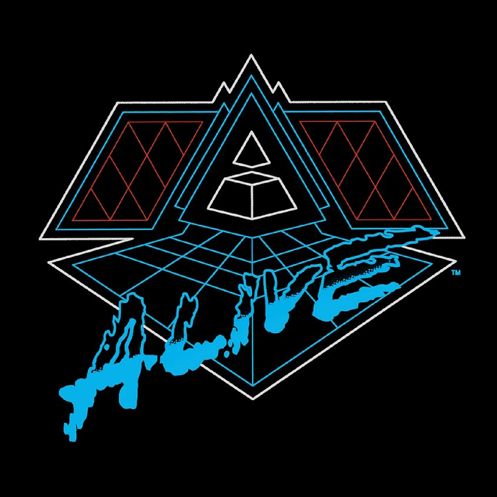

Vinyl Review

Alive 2007
Daft Punk
As a passionate music lover and electronic music enthusiast, I was excited to revisit Daft Punk's second
live album, "Alive," on vinyl. Released in 2007, this groundbreaking live album captures the duo's
electrifying performances during their iconic Alive 2006/2007 tour. Seamlessly blending tracks from their
first three studio albums, "Homework," "Discovery," and "Human After All," Daft Punk creates a mesmerizing,
continuous live mix that highlights their talent as both producers and performers.
"Alive" opens with the energizing combination of "Robot Rock" and "Oh Yeah," setting the tone for the rest
of the album with pulsating beats and the duo's signature vocoder-laced vocals. The seamless transition
between tracks showcases Daft Punk's skill as live performers and their ability to create a unique and
cohesive musical experience.
One of the standout moments on the album is the masterful blend of "Around the World" and "Harder, Better,
Faster, Stronger." By merging these two iconic tracks, Daft Punk creates a euphoric dance anthem that
demonstrates their talent for combining catchy melodies with driving, dancefloor-ready beats.
"Face to Face" and "Short Circuit" form another notable mashup on the album, with Daft Punk expertly
intertwining the tracks' distinctive elements to create a fresh and exciting live rendition. The combination
of "Face to Face's" smooth, vocoder-driven vocals and "Short Circuit's" glitchy, electronic beats results in
a captivating and immersive moment during the live performance.
The vinyl edition of "Alive" offers a warm, authentic listening experience that brings out the best in Daft
Punk's live performance and intricate mixing. The depth and richness of the analog format perfectly
complement the album's pulsating beats and intricate electronic soundscapes, making it a must-have for fans
and collectors of electronic music.
Final Verdict: "Alive" is an electrifying live album that showcases Daft Punk's talent as both
producers and performers, featuring a seamless blend of tracks from their first three studio albums. The
vinyl edition provides an immersive and authentic listening experience that captures the essence of the
duo's groundbreaking live performances, making it a must-listen for fans of electronic music and Daft Punk
enthusiasts alike.
Did you enjoy my review of this album? Check out one of my favorite album reviews below or see a
list of my reviews!
More importantly, I'm always looking for new music to enjoy. Let
me know what you're currently listening to!
My Favorites
Read why these albums are my all-time favorites!